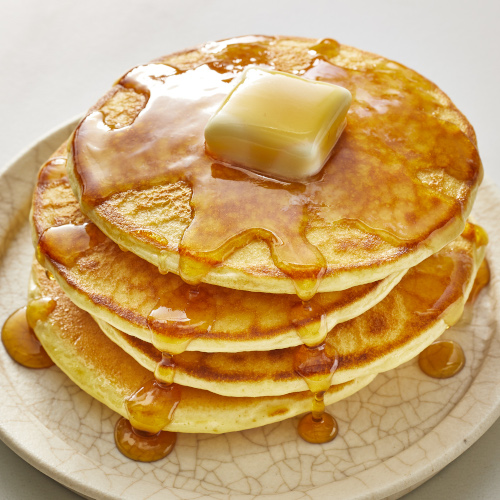

Pancakes
Click for recipe

Pancakes so easy, you'll make them every day!
This recipe is as simple as it gets.
Ingredients
- 1 1/2 cups all-purpose flour
- 3 1/2 teaspoons baking powder
- 1/4 teaspoon salt, or more to taste
- 1 tablespoon white sugar
- 1 1/4 cups milk
- 1 egg
- 3 tablespoons butter, melted
- In a large bowl, sift together the flour, baking powder, salt and sugar. Make a well in the center and pour in the milk, egg and melted butter; mix until smooth.
- Heat a lightly oiled griddle or frying pan over medium-high heat. Pour or scoop the batter onto the griddle, using approximately 1/4 cup for each pancake. Brown on both sides and serve hot.